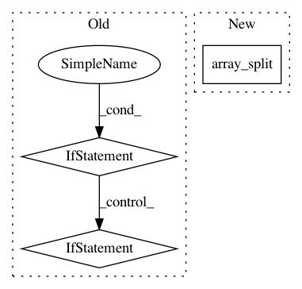

9e34b315b47fcbc1c198fe815cbf3651caee6978,mlxtend/classifier/logistic_regression.py,LogisticRegression,fit,#LogisticRegression#Any#Any#Any#,77
Before Change
if self.shuffle:
X, y = self._shuffle(X, y)
if self.learning == "gd":
y_val = self.activation(X)
errors = (y - y_val)
neg_grad = X.T.dot(errors)
l2_reg = self.l2_lambda * self.w_[1:]
self.w_[1:] += self.eta * (neg_grad - l2_reg)
self.w_[0] += self.eta * errors.sum()
elif self.learning == "sgd":
for xi, yi in zip(X, y):
yi_val = self.activation(xi)
error = (yi - yi_val)
neg_grad = xi.dot(error)
l2_reg = self.l2_lambda * self.w_[1:]
self.w_[1:] += self.eta * (neg_grad - l2_reg)
self.w_[0] += self.eta * error
cost = self._logit_cost(y, self.activation(X))
self.cost_.append(cost)
if self.print_progress:
self._print_progress(epoch=i+1, cost=cost)
After Change
if self.minibatches > 1:
X, y = self._shuffle(X, y)
minis = np.array_split(n_idx, self.minibatches)
for idx in minis:
y_val = self.activation(X[idx])
errors = (y[idx] - y_val)
neg_grad = X[idx].T.dot(errors)
In pattern: SUPERPATTERN
Frequency: 3
Non-data size: 3
Instances
Project Name: rasbt/mlxtend
Commit Name: 9e34b315b47fcbc1c198fe815cbf3651caee6978
Time: 2016-02-23
Author: mail@sebastianraschka.com
File Name: mlxtend/classifier/logistic_regression.py
Class Name: LogisticRegression
Method Name: fit
Project Name: apache/incubator-mxnet
Commit Name: a960f5a6eb5b39b3e702b3be4c938a313fcec572
Time: 2020-04-07
Author: 40382964+Tommliu@users.noreply.github.com
File Name: python/mxnet/ndarray/numpy/_op.py
Class Name:
Method Name: array_split
Project Name: ScottfreeLLC/AlphaPy
Commit Name: 49e7791a02f1e2d076ae65b3d2970631d866050a
Time: 2016-04-27
Author: Mark.R.Conway@gmail.com
File Name: features.py
Class Name:
Method Name: create_features